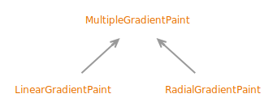

Class MultipleGradientPaint
java.lang.Object
java.awt.MultipleGradientPaint
- All Implemented Interfaces:
Paint, Transparency
- Direct Known Subclasses:
LinearGradientPaint, RadialGradientPaint
public abstract sealed class MultipleGradientPaint
extends Object
implements Paint
permits LinearGradientPaint, RadialGradientPaint
This is the superclass for Paints which use a multiple color
gradient to fill in their raster. It provides storage for variables and
enumerated values common to
LinearGradientPaint and RadialGradientPaint.- Sealed Class Hierarchy Graph:
- 
- Since:
- 1.6
{kind=link}
-
Nested Class Summary
Nested ClassesModifier and TypeClassDescriptionstatic enumThe color space in which to perform the gradient interpolation.static enumThe method to use when painting outside the gradient bounds. -
Field Summary
Fields declared in interface Transparency
BITMASK, OPAQUE, TRANSLUCENT -
Method Summary
Modifier and TypeMethodDescriptionfinal Color[]Returns a copy of the array of colors used by this gradient.Returns the enumerated type which specifies color space for interpolation.Returns the enumerated type which specifies cycling behavior.final float[]Returns a copy of the array of floats used by this gradient to calculate color distribution.final AffineTransformReturns a copy of the transform applied to the gradient.final intReturns the transparency mode for thisPaintobject.Methods declared in class Object
clone, equals, finalize, getClass, hashCode, notify, notifyAll, toString, wait, wait, waitMethods declared in interface Paint
createContext
-
Method Details
-
getFractions
public final float[] getFractions()Returns a copy of the array of floats used by this gradient to calculate color distribution. The returned array always has 0 as its first value and 1 as its last value, with increasing values in between.- Returns:
- a copy of the array of floats used by this gradient to calculate color distribution
-
getColors
Returns a copy of the array of colors used by this gradient. The first color maps to the first value in the fractions array, and the last color maps to the last value in the fractions array.- Returns:
- a copy of the array of colors used by this gradient
-
getCycleMethod
Returns the enumerated type which specifies cycling behavior.- Returns:
- the enumerated type which specifies cycling behavior
-
getColorSpace
Returns the enumerated type which specifies color space for interpolation.- Returns:
- the enumerated type which specifies color space for interpolation
-
getTransform
Returns a copy of the transform applied to the gradient.Note that if no transform is applied to the gradient when it is created, the identity transform is used.
- Returns:
- a copy of the transform applied to the gradient
-
getTransparency
public final int getTransparency()Returns the transparency mode for thisPaintobject.- Specified by:
getTransparencyin interfaceTransparency- Returns:
OPAQUEif all colors used by thisPaintobject are opaque,TRANSLUCENTif at least one of the colors used by thisPaintobject is not opaque.- See Also:
-